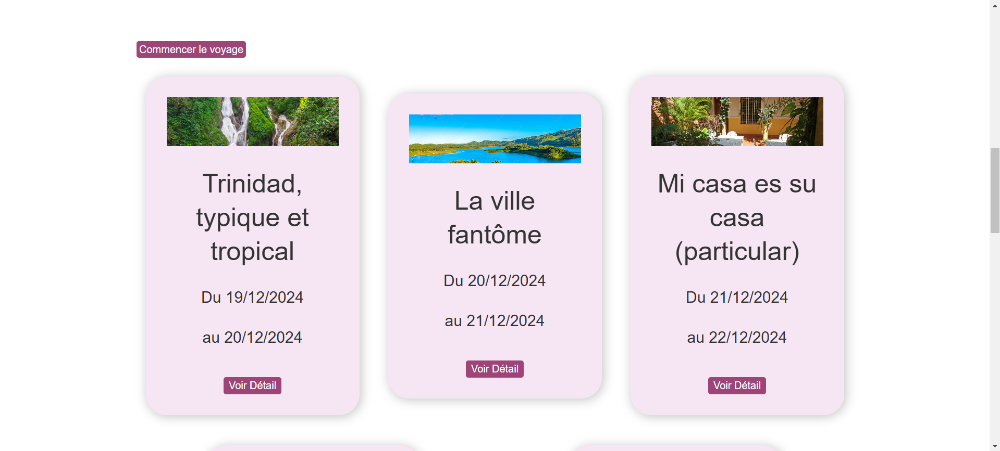
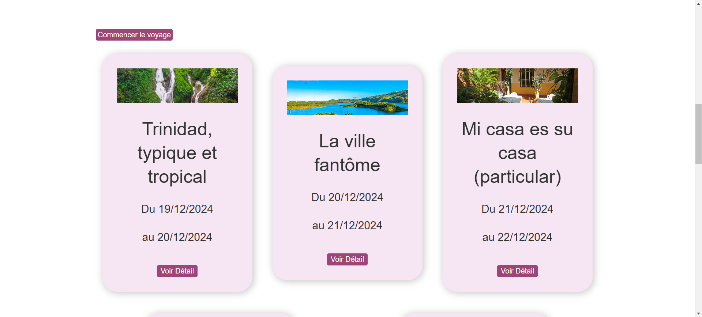

En équipe : ✅
üïô : 36 h
Un site de gestion de carnet de voyage. Il permet aux utilisateurs de
créer, éditer, afficher et supprimer des entrées de voyage, grâce à un
système CRUD (Create, Read, Update, Delete). Le site inclut également
des fonctionnalités interactives, telles que la possibilité de laisser
des commentaires et de liker les publications des autres utilisateurs.
Ce projet est développé en PHP pour la gestion du backend, avec HTML
et CSS pour la création de l'interface utilisateur. Il permet aux
voyageurs de partager leurs expériences et de recevoir des retours de
la communauté.
Ce projet a été fait en groupe de 7 et en collaboration avec des
étudiants d'un autre département (Design, graphisme, etc) dans un
temps imparti de 36h.
| Technologie |
|---|
| PHP |
| Laravel |
| SQLite |
| HTML |
| CSS |
| Fonctionnalités |
|---|
| Création, édition et suppression de voyage, d'étape et ajout de photos. |
| Visualisation du voyage et de chaque étape. |
| Filtrage des voyages par mers et océans. |
| Commenter et liker les voyages des autres utilisateurs. |
Photos :

 
